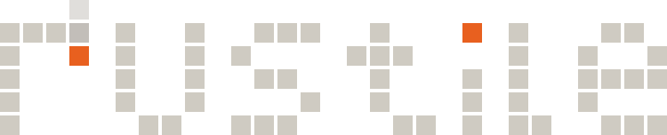
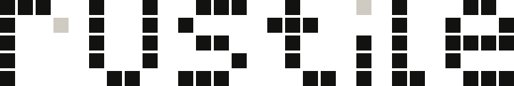

Least recently used
36 of 36 accesses miss

tiermem is a Rust library that keeps your tensors inside a memory budget. When the budget is full, it moves the tensors you are not using to pinned host RAM and brings them back before the next layer needs them.
| Mode | Outcome | Misses |
|---|---|---|
| strict | Stops at layer 4 with a recoverable BudgetExceeded | n/a |
| spill, LRU | Correct | 36 of 36 |
| spill, lookahead | Correct | 27 of 36 |
| fits in budget | Correct | 0 |
RTX 5080 Laptop, WSL2. Measured 2026-10-18 and 2026-10-29. Source: the README, Milestone 1 and Lookahead eviction.
A Manager owns your device tensors, whatever their element type, and keeps their total size in bytes under a VRAM budget. Each tensor carries a hint that says how costly it is to evict.
When a reload would go over budget, the manager evicts lower priority tensors instead of failing. It spills them to pinned host RAM, or drops them if you gave it a way to rebuild them. Where a plain allocation would run out of memory, you get an eviction, or at worst a recoverable error that says what held the memory.
The budget is logical: the manager's own accounting of the bytes it has admitted, not the driver's free memory counter. A 16 GB card can stand in for a much smaller one.
It builds on cuTile Rust and stays in user space. Quotas and isolation across processes (cgroups, eBPF, HMM) come later, once this API has proved itself.
Pinned is never evicted. Hot goes after every Evictable tensor. Evictable goes whenever room is needed.expect_accesses and the manager evicts the tensor you need farthest in the future.BudgetExceeded and HostBudgetExceeded carry a snapshot of what is resident, so you can decide what to do next.tiermemThe VRAM budget manager this page is about.tilekernelsTile kernels on cuTile Rust, each tested against a CPU reference: softmax, RMSNorm, embedding gather and a linear layer.vecaddThe original cuTile hello world: one tile kernel that adds two vectors.Your layers run in a known order. Say so once, and tiermem evicts the layer you need last and reloads the layer you need next while your kernel is still running.
Two decisions shape the numbers at the top of this page: which tensor leaves when room is needed, and how the bytes travel when it does.
Least recently used is the worst case for a layer sweep. After layer 11 comes layer 0 again, and LRU has just thrown it out, so every access misses.
A model's layer order is predictable. Declare it with Manager::expect_accesses and choose Policy::EvictLookahead. Within a hint rank the manager evicts tensors with no declared use first, then the one needed farthest in the future. That is Belady's rule, and it is optimal for the number of misses.
The simulation below applies each policy to the benchmark's access pattern: 12 layers, 4 slots in VRAM, 3 passes. Drag the slider or press play.
With LRU all 36 accesses miss. With lookahead 27 do. The interactive view needs JavaScript.
36 of 36 accesses miss
27 of 36 accesses miss
27 is the floor for 12 layers in 4 slots: three layers stay resident and the other nine rotate through the fourth slot. This is a simulation of the policy. The measured runs, with times, are in the README.
Manager::prefetch(&ids) submits a reload and returns. With Config::prefetch_depth = n each access starts reloading the next n tensors you declared.HostAlloc::Lazy locks as needed, HostAlloc::Eager locks one arena up front. Locking costs about 0.3 ms per MiB either way.Config::host_limit_bytes caps the pinned RAM held. At the cap a spill fails with HostBudgetExceeded, which is recoverable.Trace of a 30 epoch run, 264 reloads. RTX 5080 Laptop, WSL2, 2026-11-12.
| Work per layer | Fits in budget | No prefetch | Prefetch 1 | Hidden |
|---|---|---|---|---|
| 1 kernel, about 0.3 ms | 0.12 s | 0.87 s | 0.84 s | none |
| 8 kernels, about 2.7 ms | 0.92 s | 1.69 s | 1.12 s | about 70% |
| 32 kernels, about 10 ms | 3.74 s | 4.27 s | 3.90 s | about 70% |
Read only layers, lookahead policy, 30 epochs, run phase only. Median of 5 processes after one warmup. RTX 5080 Laptop, WSL2, 2026-11-12. Run to run variance is about 10%. With almost no compute per layer there is nothing to overlap with, so prefetch gains nothing.
What is built and measured is in the README. What is only an idea is in NOVELTIES.md. This page keeps the same line between them.
Lookahead eviction, clean host copies, a pinned host pool with a limit, prefetch and asynchronous write back, pressure callbacks with hysteresis, one manager for every element type. Every number is in the README with its hardware and date.
Done
Softmax, RMSNorm, embedding gather and a linear layer, each tested against a CPU reference. They do not run on tensors the manager holds yet.
Done
A feasibility report on ARC 1.0 found that its backbone cannot run from Rust on tiermem managed memory without large custom work, so that route is on hold. The basic kernels come first, and the model is chosen after them.
On hold
A router that picks between local and cloud models would also know whether the local model fits in VRAM right now. An idea in NOVELTIES.md. Nothing is built or measured.
Proposed
Through cgroups, eBPF or HMM. Not started, and not before the single process API has proved itself.
Not started
WrongDType.The full list is the Limitations section of the README. Open work is in the issues.
You need an NVIDIA GPU, a CUDA toolkit that cutile 0.4 supports, and a Rust toolchain with edition 2024 (Rust 1.85 or newer). tiermem is not on crates.io, so you build it from the repository.
git clone https://github.com/JuL-sezaR/rustile.git
cd rustilecargo test -p tiermemcargo run --release -p tiermem --example overbudget -- strictcargo run --release -p tiermem --example overbudget -- spill --lookahead --prefetch 1tiermem/examples/overbudget.rsuse tiermem::{Config, Hint, Manager, Policy};
let budget = 256 * 1024 * 1024; // bytes of VRAM the manager may use
let mut mgr = Manager::new(Config {
prefetch_depth: 1, // start reloading the next tensor early
..Config::new(budget, Policy::EvictLookahead)
});
let id = mgr.register(weights, Hint::Evictable)?; // a device tensor in, an id out
mgr.expect_accesses(&layer_ids)?; // declare the order you will use them in
mgr.ensure_resident(&[id])?; // reload it if it was spilled
let w = mgr.tensor::<f32>(id)?; // borrow it for a kernel launchtiermem is MIT licensed and developed in the open. The README has every measurement, with its hardware and date.
View on GitHub